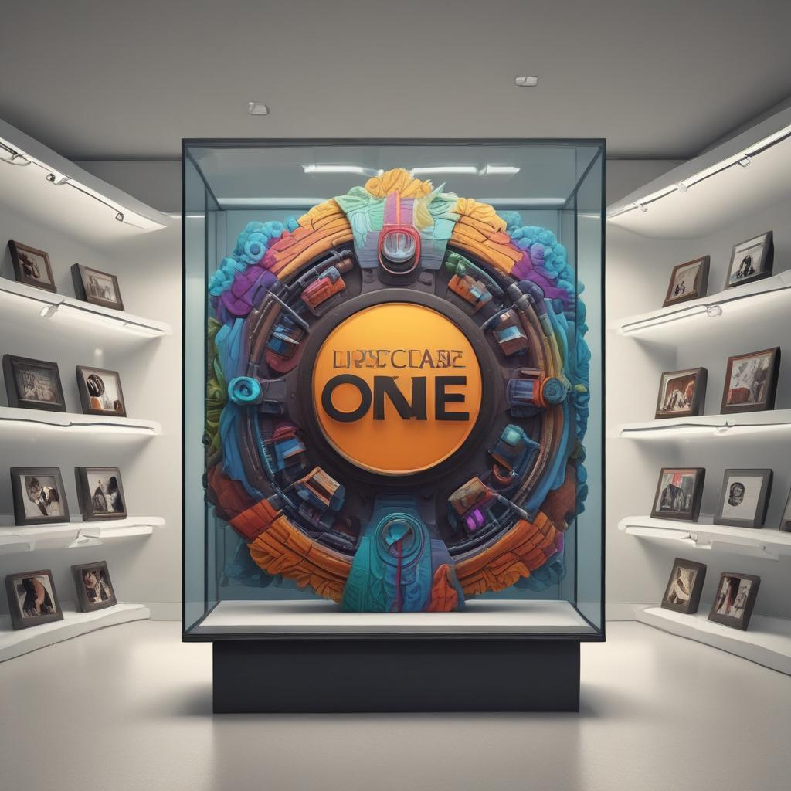

O Futuro da Tecnologia de Display
Experimente a excelência visual revolucionária com Display One - onde a inovação encontra a perfeição.

Cores Avançadas
Tecnologia de cores revolucionária para uma experiência visual superior
Zero Latência
Resposta instantânea para uma experiência sem atrasos
Recursos Inteligentes
Funcionalidades inovadoras que se adaptam às suas necessidades